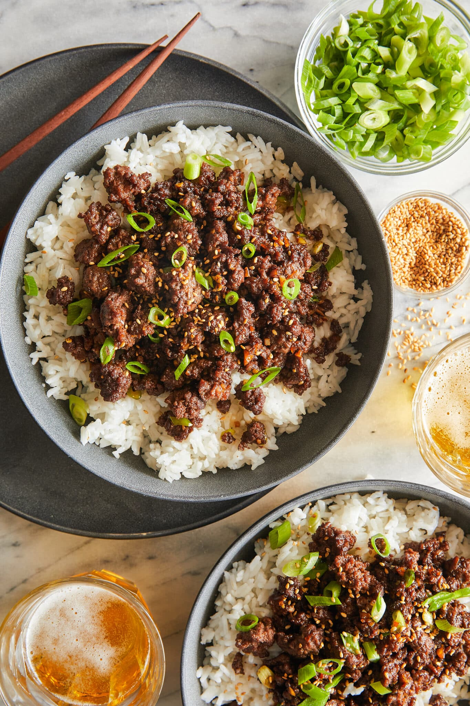

Korean Beef Bowl
Home

Description
Korean Beef Bowl is a dish from my girlfriend's from before we started dating. It is now a staple of my diet. I've added a few alterations to the original recipe.
Ingredients
- 1/4 Cup Brown Sugar
- 1/4 Cup Soy Sauce
- 2 Tsp Sesame Oil
- 1/2 Tsp Crushed Red-Pepper Flakes
- 1/4 Tsp Ground Ginger
- 1 Tbsp Vegetable Oil
- 3 Cloves Garlic
- 1lb Ground Beef
- 2 Green Onions, Thinly Sliced
- 1/4 Tsp Sesame Seeds
- 1 Cup Rice, Cooked on stove or Rice Cooker
- 2 Zucchini, Pealed and Chopped
- 3 Carrots, Chopped
- 1 Onion, Chopped
Steps
- Heat vegetable oil in a large cast iron skillet over medium high heat. Add garlic and cook, stirring constantly, until fragrant, about 1 minute. Make sure rice is cooking separately in either a pot or rice cooker.
- Add chopped, zucchini, carrot, and onion. Cook until crunchy, 10-12 minutes. Remove from pan.
- In a small bowl, whisk together brown sugar, soy sauce, sesame oil, red pepper flakes and ginger.
- Add ground beef to pan that previously had the vegetables and cook until browned, about 3-5 minutes, making sure to crumble the beef as it cooks; drain excess fat.
- Stir in soy sauce mixture and green onions until well combined, allowing to simmer until heated through, about 2 minutes.
- Serve immediately over rice and vegetables, garnished with green onion and sesame seeds, if desired.